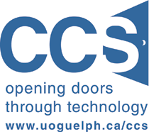

Home
This is the personal/professional site of Dylan Cooper
About Me
My name is Dylan Cooper, I am a third year undergraduate student at the University of Guelph studying Software Engineering (major) and Physics (minor). I come from the same place as the Energizer bunny, meaning I don't stop going until I get what I want (and also that I'm from the small town of Walkerton, Ontario).
This site
This site was designed as a simple, frameworkless, single page application. The reason I used an SPA rather than a regular website was because I felt like experimenting.
It is hosted through Github Pages.
Inspiration for the hashchanging technique on this site came from here which allows the URL to dictate the state of the page even though it is an SPA.
Maybe I'll even make this page responsive...
Co-op with University of Guelph CCS
Introduction
During the Summer of 2015, I worked as a Junior Developer on the Enterprise Applications team of Computing & Communication Services at the University of Guelph. This was my first job in a technical role and I found it very rewarding.
I learned a lot about the software development process during my time on the team. The software that we were working on wasn't yet in production, and a lot of what I was doing was researching what technologies we could use moving forward and how to use both those technologies and the ones provided to us by our vendor.
Goals
After a month with on the job, I was asked to create five goals for the work term:
Improve Understanding of Large-Scale Software Systems
I did gain a great understanding of how this system worked. By reading architecture documents and digging through the code, I learned all about the ins and outs of how this system worked. Through research, I also gained a solid understanding of the similarities and differences that the system had to other systems that were more common. I think that this was one of the best things about this work term; by the time that it ended, I could explain how parts worked in all of the different areas of the system.
Learn C#, .NET framework, and other tools related to the system
Tools/technologies that I extensively used while at this position:

- C#
- Microsoft Visual Studio
- Git Source Control (Git Extensions)
- ASP.NET MVC 5
- ASP.NET Web API
- Razor View Engine
- Telerik Fiddler
- KnockoutJS
- JSFiddle
- JQuery, JQuery UI
- Ajax
- Vendor specific SDKs
- More…
Over the course of the 4 month work term, I became very familiar with these technologies. Gaining a comprehensive knowledge of these tools not only helped me make a meaningful impact on the team, but now I also feel very confident that I could use them again on another project. As I got more and more familiar and comfortable with these technologies, I started to use these technologies (and similar ones) for small projects during my free time. I think that learning this large variety of tools is what made it possible to gain a more hollistic understanding of the system; I wasn't focused on a specific area and ignoring what was happening in other areas.
Gain understanding of Web Development Best Practices

Before this term, I had done a little bit of HTML, JavaScript and PHP but my web development experience was very limited. In this position, I became increasingly interested in this field. I worked with HTML5, CSS3 and JavaScript extensively while working on the front end and became very familiar with these tools. At work I became familiar with several JavaScript libraries including KnockoutJS and JQuery and using these as a baseline, I looked at others including Backbone and Angular in my free time. My new understanding of web development and best practices when creating large applications for the web was one of the best thing that I took away from this work term.
Improve Documentation Skills
I documented a lot over the course of this work term. Because the project was still in the pre-production stages, the Knowledge-Base that the team would work with extensively in the coming years still had to be created. This meant that about half of my time was spent explaining what I did in the other half. Over the course of the term, I got a lot better at this; I got better at knowing where to go into detail to make the documents complete and where not to go into detail to keep the focus where it should be. The ability to write clear and concise documentation is one of the most important skills to have as a software developer and I was really glad that I could develop my abilities during this work term.
See the Software Development Cycle Firsthand
In Software Design courses, I learned about the different stages of the software development lifecycle. Using this firsthand on a day-to-day basis was really interesting for me. In the last 2 months of my work term, I worked on a project in the system that I had been exploring. I went to meetings with the clients to gather requirements, worked with my team to design the solution and played the primary role in actually developing the solution. My work term ended just as the initial development was finished and I had demoed it to stakeholders and other members of the team. While I didn’t get to see the project move to the later stages of the development cycle, meeting with the clients and seeing that perspective of software development was really interesting for me.
Conclusion
My goal with each of my work terms is to gain a better understanding of different areas in the software development/tech industry.
There were a lot of aspects to this job that I really liked. The team was small, so I never felt like a "cog in the machine"; I could see how my work was impacting the product as a whole, and how the documentation that I was contributing to the team's knowledge-base would affect the future of the project. I really liked the stage that the project was at (pre-production) because I got to help set up software and processes in a way that I wouldn't get if I came in after the project was further along in the process. Another thing that I liked about this position was that there was always more work to do and I was very rarely waiting around for more work. It was interesting to work for the University because the organization was very service-oriented (the underlying goal of CCS is to make tasks easier for employees and students rather than to sell products or grow revenue).
Acknowledgements
Firstly, I want to acknowledge my supervisor whom I worked most closely with, Inna Klimbovskaia. I also wanted to acknowledge our manager Ruth Smith as well as Jeff Greuel, Mark Taylor and all the other members of the CCS team. They made me feel comfortable with the job and really helped make this work term a success.